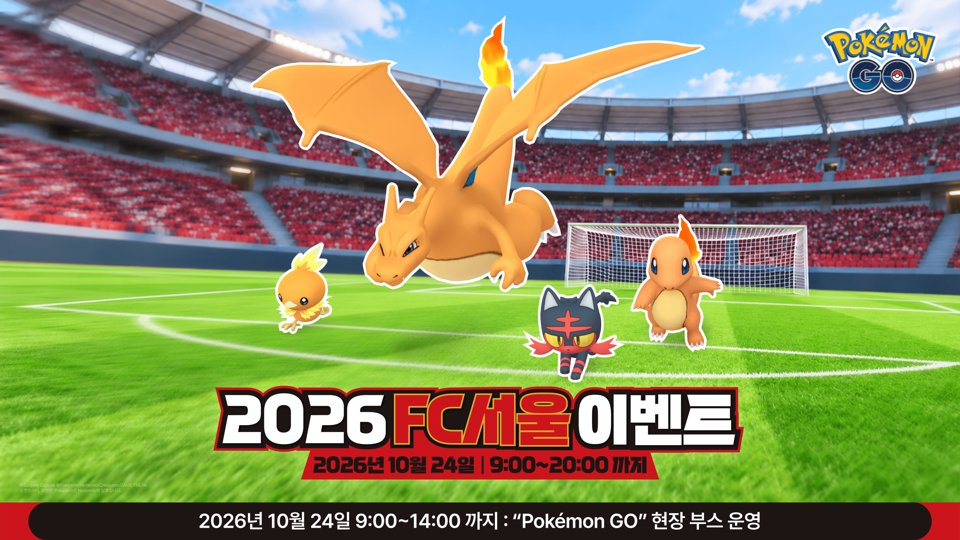
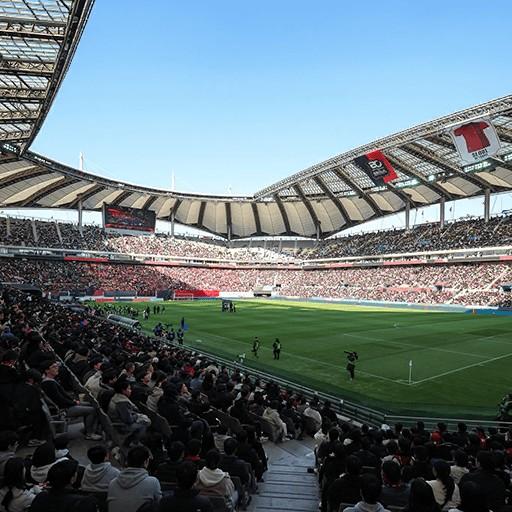

포켓몬GO FC서울 이벤트 정리 10월 24일 토요일 9시~20시, 야생 6종 파이리 레이드 시간제한 리서치 보상
오늘이 10월 16일 금요일인데요, 포켓몬GO 공식 뉴스를 열어보니 다음 주 토요일인 10월 24일에 서울월드컵경기장 일대에서 FC서울 이벤트가 열린다고 올라와 있더라고요~ 하루짜리라 놓치기 쉬운 이벤트라서 저도 달력에 적어 두면서 공지를 꼼꼼히 읽어 봤어요. 야생 포켓몬부터 별1 레이드, 시간제한 리서치, 이벤트 보너스, 현장 부스까지 한 번에 모아봤어요. 읽고 나면 24일 하루를 어떤 순서로 쓸지 감이 잡히실 거예요.

©Scopely Explore ©Pokémon/Nintendo/Creatures/GAME FREAK, 공식 뉴스 · pokemongo.com/ko/news/fc-seoul-2026
포켓몬GO FC서울 이벤트는 언제 어디서 열리나요
포켓몬GO 2026 FC서울 이벤트는 10월 24일 토요일 오전 9시부터 저녁 8시까지(한국시간) 서울월드컵경기장 일대에서 하루 동안만 열려요.
| 항목 | 내용 |
|---|---|
| 일시 | 10월 24일(토) 9:00~20:00 |
| 장소 | 서울월드컵경기장 일대 |
| 야생 | 불꽃 계열 6종 출현 증가 |
| 레이드 | 별1 파이리, 리모트 불가 |
| 리서치 | 시간제한, 11월 7일 20:00까지 |
| 부스 | 9:00~14:00 |
이벤트는 11시간 동안이고 부스는 그보다 일찍 닫는 구조라서, 하루 동선을 짤 때 부스 시간이 제일 짧다는 점부터 잡아두시면 편하거든요. 키비주얼에도 이벤트 시간 아래에 부스 운영 시간이 따로 적혀 있어서, 두 시간대를 헷갈리지 않게 구분해서 보시는 게 좋아요.
야생에선 어떤 포켓몬이 더 나오냐면요
가디·부스터·아차모·델빌·레오꼬·냐오불 6종이 이벤트 시간 동안 야생에서 더 자주 나와요. 가디·아차모·델빌·레오꼬·냐오불 다섯 종은 색이 다른 모습이 나올 확률이 오르고, 부스터만 운이 좋으면 만날 수 있어요.
| 이름 | 영문명 | 타입 |
|---|---|---|
| 가디 | Growlithe | 불꽃 |
| 부스터 | Flareon | 불꽃 |
| 아차모 | Torchic | 불꽃 |
| 델빌 | Houndour | 악/불꽃 |
| 레오꼬 | Litleo | 불꽃/노말 |
| 냐오불 | Litten | 불꽃 |
여섯 마리가 전부 불꽃 계열이라 키비주얼의 파이리·리자몽과 결이 맞아요. 공식 문구에서 부스터는 색이 다른 모습이 '운이 좋으면' 나온다고 적혀 있어서, 나머지 다섯 마리만큼 확률이 올랐다고 읽기는 어렵죠. 부스터가 목표라면 기대치를 조금 낮춰 두시는 쪽이 마음이 편합니다. 반대로 아차모·냐오불·레오꼬 같은 다섯 종은 마주칠 때마다 색을 확인해 볼 만해요.
별1 레이드 파이리는 리모트 레이드 패스로 할 수 있나요
별1 레이드 보스는 파이리이고 색이 다른 파이리가 나올 확률이 올라가지만, 리모트 레이드 패스는 쓸 수 없어서 체육관 앞까지 직접 가야 해요.
- 보스: 별1 레이드 파이리
- 로케이션 배경이 있는 개체도 만날 수 있음
- 리모트 레이드 패스 사용 불가
별1 레이드는 난도가 낮은 편이라 사람이 많이 모이지 않아도 부담이 적은데, 이번엔 집에서 리모트로 돌릴 길이 막혀 있다는 점이 포인트예요. 같은 로케이션 배경이 시간제한 리서치의 리자몽에도 붙어 있어서, 파이리로 시작해 리자몽으로 끝나는 한 세트로 보시면 이해가 쉬워요. 아래 이미지는 행사 장소인 경기장 일대를 담은 것인데요, 비공식 출처라 실제 인게임 배경과는 다를 수 있어요.

행사 장소 이미지(비공식 출처, 실제 배경과 다를 수 있음) · 출처: poketory.com/pokemongo-fc-seoul-2026
시간제한 리서치 보상, 뭐 받을 수 있죠?
시간제한 리서치는 이벤트 시간인 10월 24일 오전 9시~저녁 8시 사이에 서울월드컵경기장 일대에서 무료로 받을 수 있고, 11월 7일 토요일 저녁 8시(한국시간)까지 과제를 마치고 보상을 수령해야 해요.
- 경험치 8,042 XP
- 별의모래 5,997
- 파이리 사탕 50개
- 프리미엄 배틀패스 1개
- 로케이션 배경 리자몽 만남 — 색이 다른 모습이 나올 확률이 올라가요
- 그 외 추가 보상
파이리 사탕 50개와 리자몽 만남이 같이 붙어 있어서, 레이드로 모은 파이리를 키우는 흐름과 이어지는 구성이네요. 리서치는 24일 현장에서 받아야 하고, 과제 완료와 보상 수령 마감이 11월 7일이라는 점만 달력에 적어 두시면 됩니다.
이벤트 보너스는 어떤 것이 있나요
이벤트 보너스는 아래 세 가지예요.
- 루어모듈 효과 시간 2시간
- Nice 이상 포획 시 사탕 증가
- 이벤트 꽃가루 맵
루어모듈은 공지에 효과 2시간이라고만 적혀 있고, 사탕 보너스는 Nice 이상 포획이 조건이에요. 꽃가루 맵은 공식 문구상 이벤트와 어울리는 꽃가루가 맵에 나타나는 보너스랍니다.
현장 부스는 몇 시까지 운영하나요
현장 부스 'Pokémon GO'는 10월 24일 오전 9시부터 오후 2시까지만 운영돼서, 이벤트 종료(저녁 8시)보다 6시간 일찍 닫아요.
야생과 레이드는 저녁 8시까지 가능하지만 부스는 오후 2시에 끝나니까, 부스에 가실 거라면 오전에 먼저 들르고 나머지는 이후에 도는 순서가 편할 것 같아요. 이벤트 시간이 길어서 한 곳에 오래 머물지 않아도 되는 날이기도 해요. 부스 운영 시간과 이벤트 전체 시간은 서로 다른 시각이라, 지인과 약속을 잡으실 때도 어느 쪽을 기준으로 말하는지 한 번 맞춰 두시면 엇갈릴 일이 없잖아요.
24일 하루 동선은 어떻게 짜면 좋나요
부스가 오후 2시에 끝나는 만큼 오전에는 부스를, 오후에는 레이드와 야생을 도는 순서로 짜는 것이 좋아요.
- 오전 9시 이후 부스 먼저 방문하기 — 2시를 넘기면 들를 수 없어요
- 별1 파이리 레이드는 체육관에 직접 가서 참여하기 — 리모트가 막혀 있어요
- 시간제한 리서치는 24일 경기장 일대에서 꼭 받아 두기 — 과제와 보상 수령 마감은 11월 7일 저녁 8시예요
하루 종일 밖에서 걸어 다니게 되니 보조배터리와 물은 챙겨 두시는 쪽이 좋고, 경기장 일대는 사람이 많을 수 있으니 주변 안전에도 신경 써 주세요.
참여 전에 챙길 것은 무엇인가요
이벤트는 공식 사정으로 중지되거나 내용이 바뀔 수 있어서, 출발 전에 24일 아침 공식 공지를 한 번만 보고 나가시면 돼요.
시간제한 리서치의 과제 내용, 리서치를 받은 뒤 다른 장소에서 마무리해도 되는지, 루어모듈의 종류, 부스 프로그램은 공식 공지에 적혀 있지 않았어요. 이 부분은 이벤트 당일 인게임에서 확인되는 대로 이 글에 이어서 반영할게요.
자주 묻는 질문
Q. 시간제한 리서치를 당일에 못 받으면 나중에 받아도 되나요?
공식 안내에는 이벤트 시간 동안 서울월드컵경기장 일대에서 받을 수 있다고 적혀 있어요. 이벤트 이후에도 받을 수 있다는 안내는 없으니, 받는 건 24일 현장에서 하시고 11월 7일 저녁 8시는 완료·수령 마감으로 보시는 쪽이 안전해요.
FC서울 이벤트 한 줄 정리
하루짜리 이벤트라서 저는 오전에 부스부터 들르고 점심 이후에 파이리 레이드를 돌려볼 계획이에요~ 리서치만 24일 현장에서 받아 두면 과제는 11월 7일까지 천천히 해도 되니, 가볍게 다녀오시길 바라요 ㅎㅎ
참고한 곳
· 포켓몬GO 공식 뉴스 — 2026 FC서울 이벤트
· 포켓몬토리 — 행사 장소 이미지(비공식)
✔ 포켓몬GO 같이 보기 좋은 내용
· 포켓몬고 지가르데 셀 루트 완료 리워드로 받는 법, 맵에서 안 모아도 되고 확률은 그대로
· 포켓몬 GO 깜눈크 부화데이 10월 17일 11시부터 17시, 알 부화 거리 절반 보너스 챙기는 법
· 포켓몬고 그푸리 처음 만나는 법, 가을 소풍 GO패스 패스 태스크와 향로 출현 기간 10월 13일부터